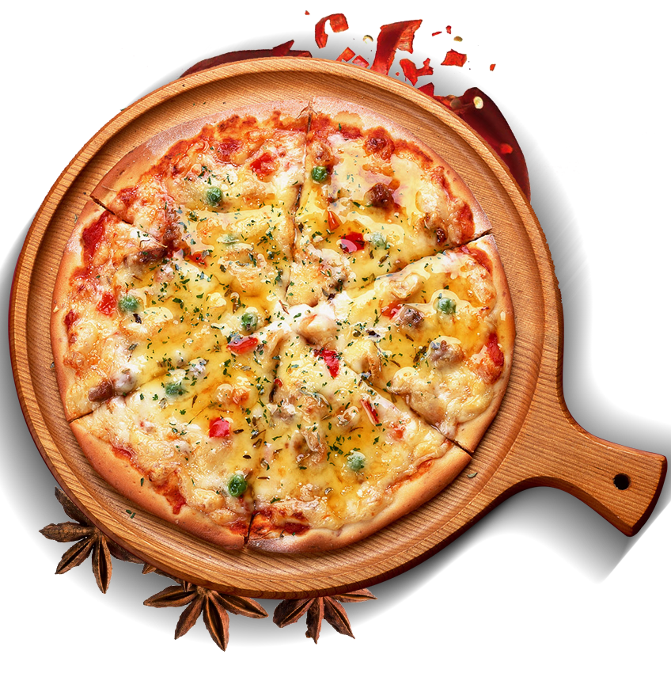

Приготуємо смачнющу піцу!
Тонка, соковита, м'яка, ніжна, тепла, ароматна - це все про неї, про піцу! Ідеальне поєднання продуктів: тягнеться сир і капає сік з помідорів - чи це не рай для гурмана? Пропоную вам приготувати піцу разом!
Побалуйте внутрішнього ласунчика
Тобі знадобляться такі інгредієнти для приготування тіста:
- мука — 300 г,
- вода — 220 мл,
- сіль — 1 чайна ложка,
- сухі дріжджі — 6 г,
- оливкова олія — 2 столових ложки.
Залий теплою водою дріжджі, посоли суміш, ретельно перемішай. До розчину дріжджів додай оливкову олію та муку. Заміси тісто. Постав тісто утепле місце на півгодини, аби воно як слід піднялося.